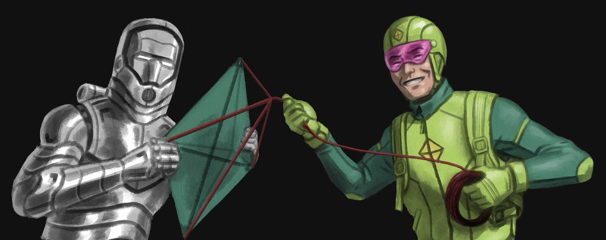

Robert Le Designs

Hank Pym
.png)
The original Ant-man, or Giant-man when he grows instead of shrinks, is the troubled scientist Hank Pym. In the comics, Hank had different costumes when he’s in Ant-man mode and Giant-man mode. Later on, it seemed to be one suit that can change appearance when it grows or shrinks. Nowadays, because of the popularity of Scott Lang Ant-man in the movies, the main Ant-man in the comics now is Scott with one unchanging suit that both grows and shrinks.
Because of that, the challenge of this design for me is to create a suit that can change visually with an in-story reason. Here, Hank Pym wears a red mask with red visor, and a metal helmet with antennas on top of the fabric mask. The reason in my mind is when Hank is in Ant-man mode, he needs the helmet and antennas to mentally control insects by sending out some kind of frequency. When Hank grows and becomes Giant-man, the frequency perhaps would become too powerful that can be harmful to the tiny critters, so he retracts it so that he doesn’t accidentally use it.
When the suit changes mode, the red Pym particle energy is redirected to different tubes on the suit, which changes the suit pattern to coincide with the pattern of the classic costumes. Classic Giant-man has a metallic belt, so I added a mechanism to the metallic belt buckle that can slide to both sides and turn the black belt into its metal counterpart.
On top of the classic gloves is a strange zigzag pattern that I try to illustrate with a square red light. The pants design is to recreate the “black underpants outside of red leggings” feel of both original suits, as expected.